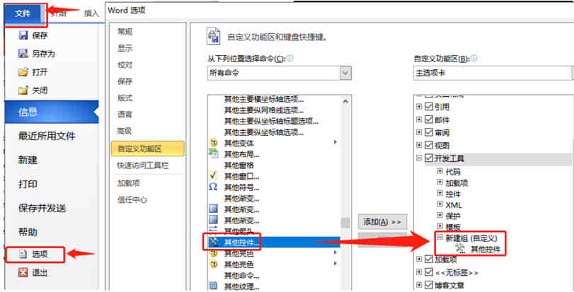
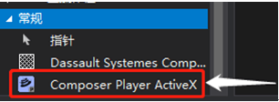

DSComposer-第三程序控件
说明介绍 SOLIDWORKS Composer 在第三程序控件的操作。
原生的 Composer 程序可以导出类似 smg，exe，视频等格式文件，但是作为宣传展示资料时还是比较单一。那么我们会考虑将导出的展示文件放置到 office 等办公软件，搭配其他说明内容一起展示。下面我将介绍如何在 office 软件上使用 Composer 控件。
注册控件
方法 1：自动注册
找到安装包位置：“
Bat 文件作用是根据安装的 Composer 版本，注册 32 或 64 位版本的 ComposerPlayerActiveX.ocx。
方法 2：手动注册
1、打开一个命令提示符，在运行;输入 cmd 并按 Enter 键。
2、在命令提示符中输入 regsvr32 将 dll 或 ocx 文件从 Windows 资源管理器中拖放到命令提示符中，然后按 enter 键注册 dll 或 ocx 文件。
（注意，如果您以管理员模式启动命令提示符，则可能无法拖放 dll/ocx;在这种情况下，您需要手动输入文件的完整路径）
（office 文档内的控件使用“composerplayeractivex.ocx”文件）
使用控件：
office
在 office 等软件上开启使用“其他控件”功能，如果菜单栏无“其他控件”则可在【软件选项-自定义功能区】添加“其他控件”到菜单栏。
在菜单栏点开“其他控件”功能，选择“composer Player ActiveX”在文档中拖拽出控件框。这就是 Composer Player 显示文件的地方。
控件属性
右键单击控件，然后单击<Composer Player ActiveX 对象>属性。在“Composer Player ActiveX 属性”对话框中：
1、 在 General 选项卡上，选择 Composer 文件并选择渲染选项。
2、在 Layout 选项卡上，选择要显示的工具栏和窗格：
3、单击确定。
编辑控件
要预览 Composer 文档，右键单击控件，然后单击 Composer Player ActiveX Object > Edit。此时就能用 Composer Player 操作控件内的 smg 文件。
Winform
在 winform 界面下，打开工具箱，在工具箱里【添加项】
在 COM 组件中找到“Composer Player ActiveX”控件并勾选确认。
完成后，Composer 的第三方控件就能在 Winform 程序里被添加使用了。
Q&A
COM 组件无效的错误消息
当您尝试从 Microsoft® Visual Studio 等程序将参考添加到“composer.exe”文件时，您可能会看到随附图像中的错误。此问题的可能原因是一些注册表实体已损坏。例如，SOLIDWORKS® Composer COM 对象未正确注册或没有访问注册表项的权限。
当您向 SOLIDWORKS Composer.exe添加参考时，Visual Studio 应生成 Interop-DLL，然后将其显示在参考 DLL 列表中。（似乎是2016后的版本就不行了）
但是，您也可以手动生成此 DLL 并直接参考。请执行以下步骤：
1.从 Windows“开始”菜单的“Visual Studio”部分中，单击“Visual Studio x64 Win64 命令提示符”。
2.在命令提示符中键入以下命令：注意：确保指定正确的平台以及“composer.exe”文件的正确路径。
1 | tlbimp "C:\Program Files\Dassault Systemes\CATIAComposer\7.2\Bin\CATIAComposer.exe" /namespace:DSComposer /machine:X64 |
3.将生成的 DSComposer.dll 移至计算机上的相应目录。在您的项目中，添加此 DLL 的参考
参考
如何注册 dll 或 ocx 文件：
https://support.microsoft.com/en-us/help/844592/how-to-register-a-dll-file
DirectX：
http://zhidao.baidu.com/question/869146.html
ActiveX：
http://zhidao.baidu.com/question/693568.html
Wpf 操作参考：
https://blog.csdn.net/weixin_33785972/article/details/92623924.html